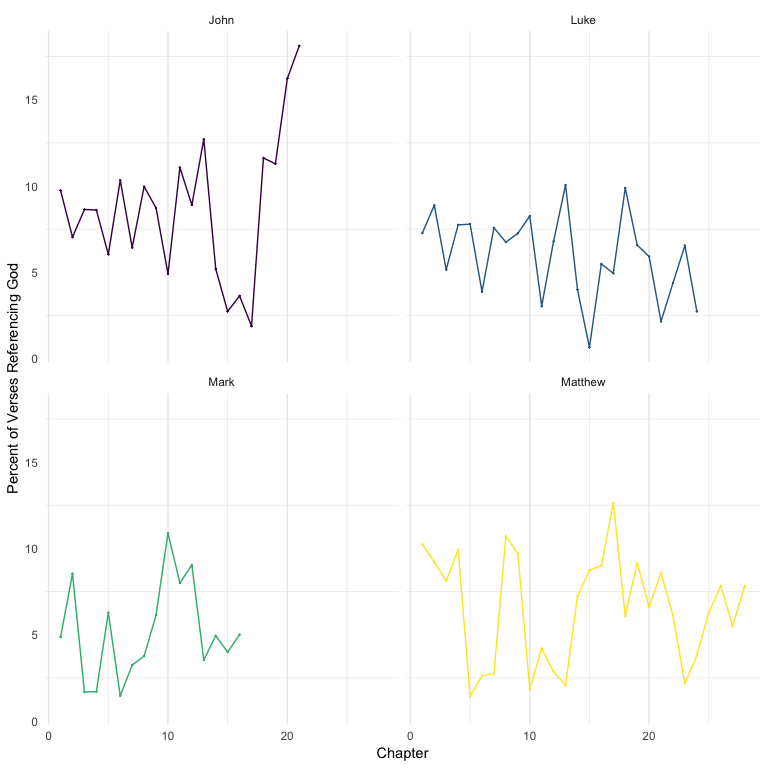
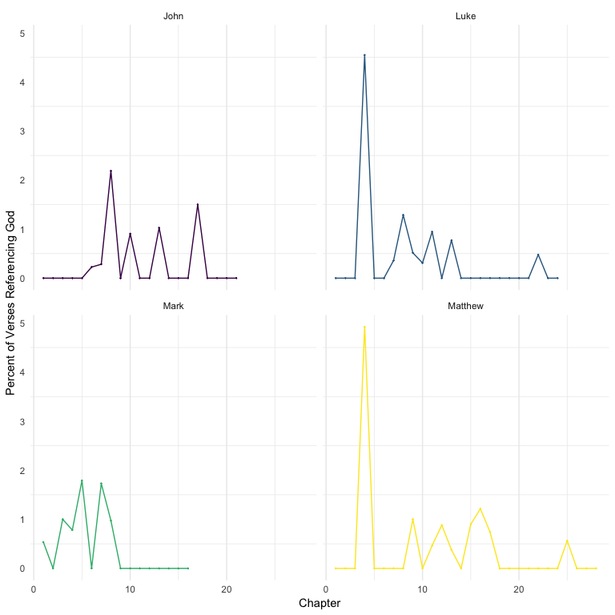
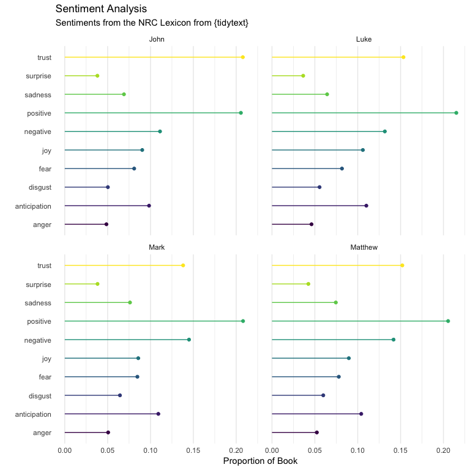
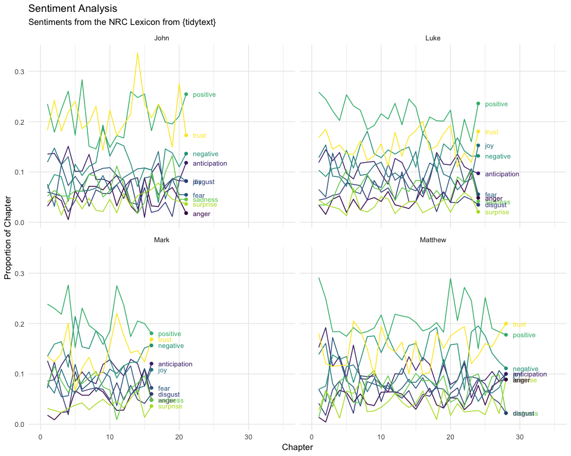
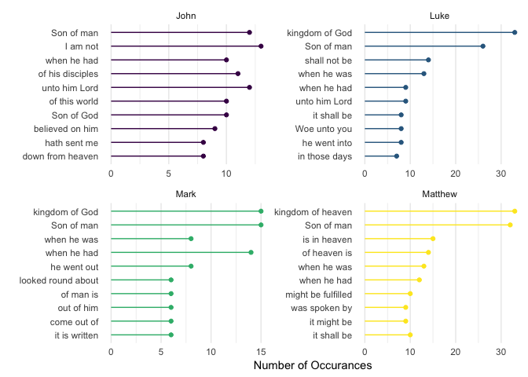
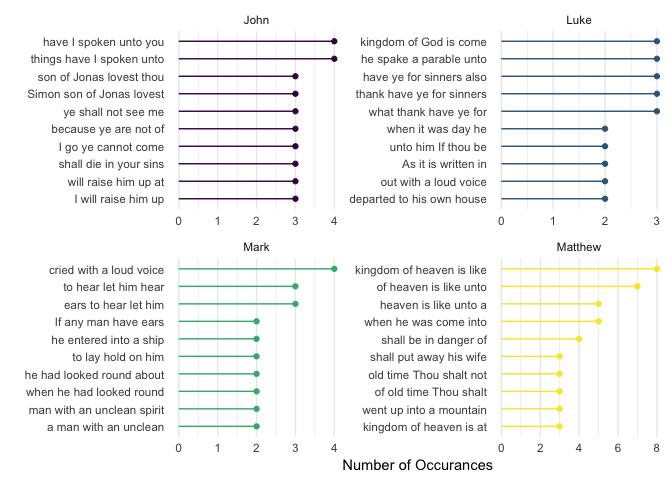

data.table and Text Analysis: Analyzing the Four Gospels
data.table more often in my work. A post showing data.table being used with pipes (which…
I am really enjoying quantitative text analysis as of late, sparked by a project I helped on regarding Autoscore. I’ve also had the desire to use data.table more often in my work. A post showing data.table being used with pipes (which I tweeted about here) got me really going.
This post, then, is showing data manipulation using %>%, data.table and other useful functions from the tidyverse to analyze textual data. I picked the text from the Holy Bible, provided by Andrew Heiss on GitHub here and CRAN. I also pull from the quanteda and tm packages for some of the textual analyses. Finally, can’t forget the tidytext package for preparing and analyzing the text.
library(data.table)
library(tidyverse)
library(scriptuRs)
library(quanteda)
library(tm)
library(tidytext)Below I grab the new_testament data set (King James Version), create a data table with it, and grab just the four gospels.[1] The next part of the pipe creates the “tokens” variable, which is each individual word in each verse of the scriptures. The purrr::map(...) is doing the heavy lifting and ultimately creates a list column (a variable that has a list inside of it). To get it to a more useful form, we unnest it.
## Grab the new testament
nt <- scriptuRs::new_testament
## Make a data.table
gospels <- data.table(nt)
## Tokenize the text with just the four gospels
gospels <- gospels[book_title %in% c("Matthew", "Mark", "Luke", "John")] %>%
.[, tokens := purrr::map(text, ~tm::MC_tokenizer(.x))]
gospels2 <- unnest(gospels, tokens)
head(gospels2[, .(book_title, chapter_number, verse_number, tokens)])## book_title chapter_number verse_number tokens
## 1: Matthew 1 1 THE
## 2: Matthew 1 1 book
## 3: Matthew 1 1 of
## 4: Matthew 1 1 the
## 5: Matthew 1 1 generation
## 6: Matthew 1 1 ofThe Four Gospels
The first part of our analysis will look at general themes of the gospels, including the amount of references to God (and synonyms), as well as Satan (and synonyms). We also look at general sentiment analysis, readability, and common word choices.
First, we look at the references to God and Satan. We start by creating a vector of synonyms for God and then for Satan.
syn_god <- c("god", "messiah", "jesus", "christ", "jehovah", "savior", "redeemer", "lord")
syn_satan <- c("satan", "devil", "lucifer", "tempter", "accuser", "perdition")Then we grab gospels and make the tokens variable to lower, create the god variable that says if the token is within the god synonym vector, then give the variable a 1, otherwise a 0. We did the same for the satan variable.
gospels2 <- gospels2 %>%
.[, tokens := stringr::str_to_lower(tokens)] %>%
.[, god := ifelse(tokens %in% syn_god, 1, 0)] %>%
.[, satan := ifelse(tokens %in% syn_satan, 1, 0)]This next step calculates by book, chapter, and verse, whether any of the tokens are referencing God; then gets a proportion of verses (of all the verses within each book and chapter), are referencing God. Finally, the pipe plots it using the ggplot2 package.
gospels2[, verse_god := ifelse(sum(god) > 0, 1, 0), by = .(book_title, chapter_number, verse_number)] %>%
.[, (sum(verse_god)/length(unique(verse_number))), by = .(book_title, chapter_number)] %>%
ggplot(aes(chapter_number, V1, color = book_title)) +
geom_point(size = .1) +
geom_line() +
facet_wrap(~book_title) +
labs(y = "Percent of Verses Referencing God",
x = "Chapter") +
theme_minimal() +
theme(legend.position = "none",
panel.grid.major.y = element_blank()) +
scale_color_viridis_d()
Overall, the four books consistently reference God about 5-15% of the verses reference God across the chapters. John appears to reference the most, especially toward the end of the book, with the last few chapters referencing >10%.
Now for the references to Satan.
gospels2[, verse_satan := ifelse(sum(satan) > 0, 1, 0), by = .(book_title, chapter_number, verse_number)] %>%
.[, (sum(verse_satan)/length(unique(verse_number))), by = .(book_title, chapter_number)] %>%
ggplot(aes(chapter_number, V1, color = book_title)) +
geom_point(size = .1) +
geom_line() +
facet_wrap(~book_title) +
labs(y = "Percent of Verses Referencing God",
x = "Chapter") +
theme_minimal() +
theme(legend.position = "none",
panel.grid.major.y = element_blank()) +
scale_color_viridis_d()
Much, much lower compared to the references to God. The spikes are the chapters wherein the temptations of Satan to Jesus are presented. But for the most part, not many references to Satan in the gospels.
Sentiment
The next question deals with the sentiment of the writing. Using the “NRC” sentiment algorithm from tidytext, we get the overall sentiments of each book.
gospels2 %>%
merge(tidytext::get_sentiments("nrc"), by.x = "tokens", by.y = "word") %>%
.[, .N, by = .(book_title, sentiment)] %>%
.[, n := N/sum(N), by = .(book_title)] %>%
ggplot(aes(n, sentiment, color = sentiment)) +
geom_point() +
geom_segment(aes(xend = 0, yend = sentiment)) +
facet_wrap(~book_title) +
theme_minimal() +
theme(legend.position = "none",
panel.grid.major.y = element_blank()) +
labs(x = "Proportion of Book",
y = "",
title = "Sentiment Analysis",
subtitle = "Sentiments from the NRC Lexicon from {tidytext}") +
scale_color_viridis_d()
thing <- gospels2 %>%
merge(tidytext::get_sentiments("nrc"), by.x = "tokens", by.y = "word") %>%
.[, .N, by = .(book_title, chapter_number, sentiment)] %>%
.[, n := N/sum(N), by = .(book_title, chapter_number)]
thing %>%
ggplot(aes(chapter_number, n, color = sentiment, group = sentiment)) +
geom_line() +
facet_wrap(~book_title) +
geom_text(data = filter(group_by(thing, book_title),
chapter_number == max(chapter_number)),
aes(label = sentiment),
hjust = 0, size = 3,
nudge_x = 1) +
geom_point(data = group_by(thing, book_title) %>% filter(chapter_number == max(chapter_number))) +
theme_minimal() +
theme(legend.position = "none",
panel.grid.minor.y = element_blank()) +
labs(x = "Chapter",
y = "Proportion of Chapter",
title = "Sentiment Analysis",
subtitle = "Sentiments from the NRC Lexicon from {tidytext}") +
coord_cartesian(xlim = c(0, 35)) +
scale_color_viridis_d()
Readability
The Flesch reading ease score attempts to quantify how difficult text is to understand. This site demonstrates that:
| Score | Notes |
|---|---|
| 90 – 100 | easily understood by an average 11-year old student |
| 60 – 70 | easily understood by 13-15-year-old students |
| 0 – 30 | best understood by university graduates |
We run the statistic using the quanteda::textstat_readability() function and then summarize with the mean and standard deviation of the reading score.
gospels2 %>%
.[, readability := quanteda::textstat_readability(text)$Flesch] %>%
.[, .(Mean = mean(readability), SD = sd(readability)), by = book_title]## book_title Mean SD
## 1: Matthew 73.41289 14.58498
## 2: Mark 74.95304 13.84790
## 3: Luke 74.80256 14.05367
## 4: John 77.34579 13.03790This suggests that each are between 11 - 13 year old level. This may be somewhat misleading as the words themselves are not particularly difficult, but the old-English style of the King James Version may make it more difficult than that.
Word Choice
First we look at book length. Mark was the shortest; Luke was the longest (not too surprising if you’ve read these books before).
gospels2 %>%
.[, .N, by = book_title] %>%
.[order(N)]## book_title N
## 1: Mark 15186
## 2: John 19125
## 3: Matthew 23727
## 4: Luke 25985Next, we look at the most common three and five word sequences in each book. We go back to our original gospels data table to do this (without the unnesting).
gospels %>%
.[, gram3 := purrr::map(tokens, ~quanteda::char_ngrams(.x, 3))] %>%
.[, gram5 := purrr::map(tokens, ~quanteda::char_ngrams(.x, 5))]The following lines are a bit convoluted but I’ll attempt to explain them. First, we unnest the gospels data table by our new variable gram3, which houses all of the three word combinations. Next, we remove the underscores and then remove the words that we are not very interested in (e.g. tell, said, saith). Next we get the counts (using .N) by book and each three word combination. We order it (in reverse order) and grab the top 10 sequences for each book using .SD[1:10]. We then create a new variable that is the average count of each three word combination across books and order by the new variable. Finally, we make our three letter words a factor and put them in the order of average counts. Lastly, we plot it.
unnest(gospels, gram3) %>%
.[, gram3 := stringr::str_replace_all(gram3, "_", " ")] %>%
.[!stringr::str_detect(tolower(gram3), "tell|said|saith|say|answered|which|that|the|verily|and|pass|came")] %>%
.[, .N, by = .(book_title, gram3)] %>%
.[order(-N)] %>%
.[, .SD[1:10], by = book_title] %>%
.[, avg_count := mean(N), by = gram3] %>%
.[order(avg_count)] %>%
.[, gram := fct_inorder(gram3)] %>%
ggplot(aes(N, gram, color = book_title)) +
geom_point() +
geom_segment(aes(yend = gram3, xend = 0)) +
facet_wrap(~book_title, scales = "free") +
theme_minimal() +
theme(legend.position = "none",
panel.grid.major.y = element_blank()) +
labs(x = "Number of Occurances",
y = "") +
scale_color_viridis_d()
This shows the most common three-word sequences. Several are common across the books: kingdom of God (heaven), Son of man, and other references to heaven.
We follow the same procedure for the five word sequences.
unnest(gospels, gram5) %>%
.[, gram5 := stringr::str_replace_all(gram5, "_", " ")] %>%
.[!stringr::str_detect(tolower(gram5), "tell|said|saith|say|answered|which|that|the|verily|and|pass|came")] %>%
.[, .N, by = .(book_title, gram5)] %>%
.[order(-N)] %>%
.[, .SD[1:10], by = book_title] %>%
.[, avg_count := mean(N), by = gram5] %>%
.[order(avg_count)] %>%
.[, gram := fct_inorder(gram5)] %>%
ggplot(aes(N, gram, color = book_title)) +
geom_point() +
geom_segment(aes(yend = gram5, xend = 0)) +
facet_wrap(~book_title, scales = "free") +
theme_minimal() +
theme(legend.position = "none",
panel.grid.major.y = element_blank()) +
labs(x = "Number of Occurances",
y = "") +
scale_color_viridis_d()
This shows the most common five-word sequences. Interestingly, this is quite different from the three-word sequences. This is partly due to the nature of finding a longer string of words that are repeated (there are fewer five-word sequences than three). Still, there is reference to the kingdom of God (heaven) in both Luke and Matthew. In John, the quote “Simon, son of Jonas, lovest thou me?” shows up as two of the five-word sequences. It also shows that the phrase: “I will raise him up at the last day” is common in John. Matthew, on the other hand, has four of the top 10 referencing heaven. In Mark, the phrase: “If any man have ears to hear, let him hear” is common.
The Words of Jesus Upcoming
In a future blog post, I want to analyze the words of Jesus as quoted in the Gospels. I’m interested in using the New Internation Version or another modern translation for this. If you are aware of a corpus that would allow this, I would love to hear from you!
[1] For those unfamiliar, the first four books of the New Testament are about the mortal life of Jesus and are often referred to as the “gospels”. They may be the most oft read books in all of Christianity.